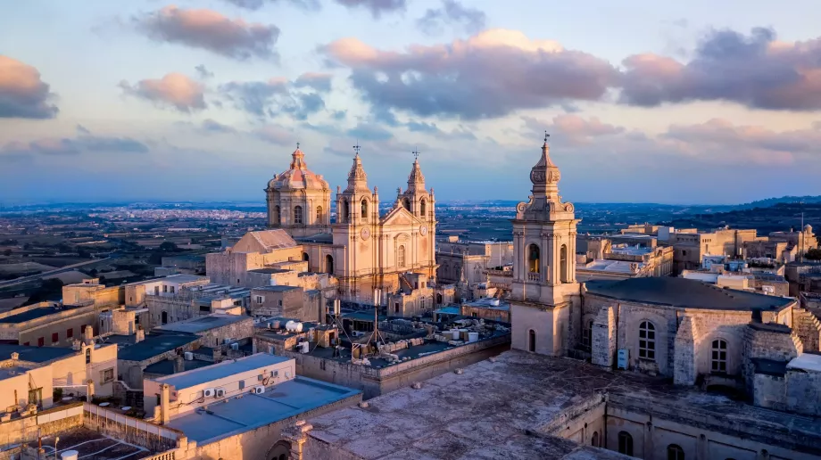
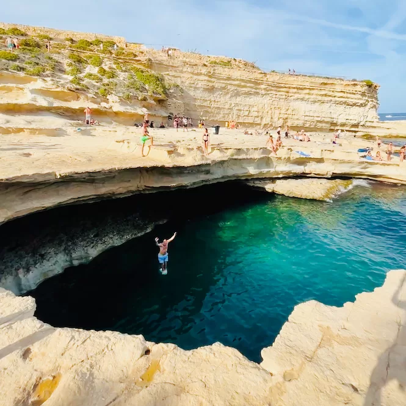

Itinerario Avventura (6 Giorni)
Se sei un amante dell'adrenalina e dell'esplorazione, questo itinerario ti porterà tra scogliere mozzafiato, grotte nascoste e le acque cristalline di Comino. Preparati a vivere Malta da una prospettiva dinamica!

Giorno 1: Domenica 8 Settembre - Arrivo e Relax Serale
- Sera: Arrivo all'aeroporto di Malta alle 19:45. Dopo il trasferimento e il check-in in appartamento (prevedendo di arrivare intorno alle 22:00/23:00), dedica la serata al relax. Si può optare per una cena veloce in un ristorante vicino all'appartamento o semplicemente rilassarsi dopo il viaggio. Data l'ora tarda, non sono previste attività turistiche significative.
Giorno 2: Lunedì 9 Settembre - Valletta, Capitale Barocca e Le Tre Città
- Mattina: Prendi il traghetto da Sliema a Valletta. Esplora la capitale, concentrandoti sulla magnificenza della Concattedrale di San Giovanni e sui panorami offerti dai Giardini di Barrakka Superiore. Percorri le vie principali e secondarie per apprezzare l'architettura barocca.
- Pomeriggio: Dopo pranzo a Valletta, si può prendere un traghetto aggiuntivo per le Tre Città (Vittoriosa, Senglea e Cospicua). Si esplorano i loro pittoreschi vicoli, le fortificazioni e le marine, immergendosi in un'atmosfera di profonda storia marittima.
- Sera: Rientro a Sliema. Si può considerare una cena in un ristorante di Sliema con vista sulla Valletta illuminata.


Giorno 3: Martedì 10 Settembre - Mdina, Rabat e Catacombe
- Mattina: Si prende un autobus per Mdina, l'antica "Città Silenziosa". Si passeggia tra le sue strade medievali, si visita la Cattedrale e si ammirano le viste panoramiche dai bastioni.
- Pomeriggio: Si può esplorare anche la vicina Rabat, con le sue catacombe e l'atmosfera locale. Pranza in un locale tradizionale a Rabat.
- Sera: Rientro a Sliema e cena.
Giorno 4: Mercoledì 11 Settembre - Grotte Marine, Templi Megalitici e St. Peter's Pool
- Mattina: Si può prendere un autobus da Sliema verso il sud di Malta, fino a Wied iz-Zurrieq. Da qui, si suggerisce di prendere una delle piccole imbarcazioni locali per una visita alla famosa Grotta Azzurra (Blue Grotto) e alle grotte circostanti. L'escursione è breve ma offre colori mozzafiato e formazioni rocciose uniche.
- Pomeriggio: Dopo la visita, si può pranzare in uno dei ristoranti di pesce a Wied iz-Zurrieq. Successivamente, si può proseguire in autobus per visitare i vicini Templi Megalitici di Hagar Qim e Mnajdra, siti UNESCO che offrono un'immersione nella storia preistorica di Malta con una vista spettacolare sul mare. Successivamente, si può prendere un'autobus o un taxi per raggiungere St. Peter's Pool. Qui, ci si può rilassare, nuotare e fare snorkeling in questa splendida piscina naturale scavata nella roccia, godendosi un pomeriggio di sole e mare in un ambiente unico.
- Sera: Rientro a Sliema e cena.


Giorno 5: Giovedì 12 Settembre - Escursione a Gozo e la Laguna Blu (Comino)
- Giornata intera: Questa è la giornata dedicata all'escursione completa. Si può raggiungere Cirkewwa (punta nord di Malta) in autobus e prendere il traghetto per Gozo. A Gozo, si suggerisce di visitare la Cittadella di Victoria per ammirare i panorami a 360 gradi sull'isola e la sua storia. Si può poi scegliere di visitare una baia pittoresca come Xlendi Bay o Marsalforn Bay per un tuffo veloce. Per la Blue Lagoon, si può prendere una barca da Mgarr (Gozo) o da Cirkewwa (Malta). Si raccomanda di partire presto al mattino per godere delle acque cristalline prima che l'affluenza diventi eccessiva.
- Consiglio extra: Per un'esperienza più autentica a Gozo, noleggia uno scooter o un quad per esplorare l'isola a tuo piacimento, visitando anche luoghi meno battuti come le saline di Xwejni o la Basilica di Ta' Pinu.
- Sera: Rientro a Sliema dopo una giornata intensa ma ricca di bellezze naturali.
Giorno 6: Venerdì 13 Settembre - Spiagge del Nord: Golden Bay e Ghajn Tuffieha
- Giornata intera: Si dedica questa giornata alle ampie spiagge di sabbia dorata del nord. Si può prendere un autobus da Sliema per raggiungere Golden Bay, una delle spiagge più popolari e ben attrezzate di Malta. Successivamente, si può fare una breve passeggiata (o scendere la scalinata) per esplorare la più tranquilla e scenografica Ghajn Tuffieha Bay, ideale per il relax e un bagno.
- Consiglio extra: Si può restare in zona per ammirare un tramonto spettacolare su Ghajn Tuffieha se si è disposti a rientrare più tardi a Sliema.
- Sera: Ultima cena speciale a Sliema o nella vicina St. Julian's.


Giorno 7: Sabato 14 Settembre - Mattinata Libera e Partenza
- Mattina: Tempo libero per gli ultimi acquisti di souvenir a Sliema, una passeggiata rilassante sul lungomare, o un caffè finale.
- Pomeriggio: Trasferimento all'aeroporto per il volo di rientro previsto per le 19:50. Considera di partire dall'alloggio almeno 3 ore prima del volo per avere tempo sufficiente per il check-in e i controlli di sicurezza.